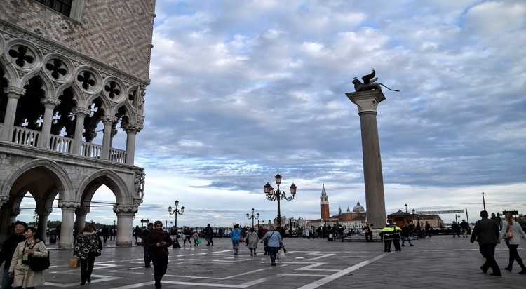

Un viaje...
Venecia, la capital de la región de Véneto en el norte de Italia, abarca más de 100 islas pequeñas en una laguna del mar Adriático. No tiene caminos, sino solo canales, incluida la vía pública del Gran Canal, bordeada de palacios renacentistas y góticos. En la plaza central de San Marcos, se encuentra la basílica de San Marcos, que tiene un suelo de mosaicos bizantinos, y el campanario Campanile con vista a los techos rojos de la ciudad.
Actividades y atracciones del lugar.
1 Puente de los Suspiros
Construido en 1600, el Puente de los Suspiros conecta las salas de interrogatorio en el Palacio Ducal y la nueva cárcel a través del Río di Palazzo. Fue diseñado por Antonio Contino cuyo tío Antonio da Ponte había diseñado el puente de Rialto.
2San Giorgio Maggiore
Mejor conocido como el hogar de la iglesia del siglo 16 del mismo nombre, San Giorgio Maggiore es una pequeña isla situada al otro lado de la laguna de la plaza de San Marcos. Diseñada por el gran arquitecto renacentista Andrea Palladio.
3 Piazza San Marco
Como la única plaza pública de Venecia, la Plaza de San Marcos ha sido el principal punto de encuentro de la ciudad durante siglos. Rodeado de cafés al aire libre y atracciones históricas, incluyendo la Basílica de San Marco y el Palacio Ducal.
4 Puente Rialto
El puente de Rialto es uno de los cuatro puentes que cruzan el Gran Canal. Por casi trescientos años era la única manera de cruzar el Gran Canal a pie. Este puente de piedra fue diseñado por Antonio da Ponte .
5 León Alado
FOTO SIMBÓLICA: el símbolo de Venecia es el León Alado, búscalo por toda la ciudad y no te vayas sin una foto con él! Trae muuucha suerte (esto me lo acabo de inventar, pero intentarlo no hace daño!).
Comidas que debes probar si visitas el lugar
Si eres una persona a la que le gusta probar la comida típica de los lugares para sentirse más en casa, Venecia es un sitio que te encantará. Hay muchísimos y variados platos que dan buena cuenta del sabor de la comida mediterránea y que seguramente te harán disfrutar muchísimo más de tu estancia.La mayoría de los platos venecianos tienen como ingrediente principal el pescado, marisco y verduras de estación. La comida suele ser fresca y sencilla. Además, es una cocina que se caracteriza por una condimentación típica europea.
MOUSSE DE BACALAO SALADO
SARDINAS FRITAS
TIRAMISÚ
PESCADO A LA BRASA
BIGOLI
LA TRADICIONAL "OMBRA"